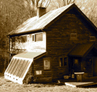
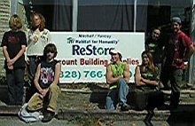

| Students | |
|  | |
| Campus | |
| Adventures | |
SCENES FROM AMS video |
|
Watch footage of daily life by clicking here. |
|
The Arthur Morgan School (AMS) provides a safe and loving environment where 27 day and boarding school students in grades 7, 8 and 9 learn to question and evaluate, think creatively and work cooperatively. Students and staff honor the Quaker values of simplicity, responsibility, personal integrity, nonviolent conflict resolution and respect for self, others and the environment. At AMS students grow in capability, confidence and independence as they live, learn and explore the world with staff and their peers. AMS graduates successfully enter the adult world with a love of learning, interest in self-discovery, social awareness and a sense of personal empowerment. |
|

AMS Helps Out Habitat By Moon Winfrey
During many Wednesday work project periods this year, a group of students and staff from AMS have visited “Restore”, a reused furniture and discounted building supply store run by the Yancey/Mitchell County chapter of Habitat for Humanity. At “Restore” the students have helped move furniture to make space for more furniture to arrive. The AMS students have also done some landscaping work in front of the store to make the façade of the building more appealing for people on the street. The work that AMS performs in the community is part of the service component of its curriculum. Eighth grade student John Murray who worked on the project said, “This is our way of reaching out to the community.” Eighth-grader Alex Boyd reported “Even though it was really hot, we still had a lot of fun and got a lot done.” Donna Rocha, the manager of “Restore” agreed, “We couldn’t have got it done without you.” |
|